This superficial tutorial will guide you through most of the basic functions of the plugin. Before proceeding with it, I recommend reading the documentation carefully.
Getting Started
Install the LadyBug Tracker plugin.
Download Example Project and open it using the Unreal Engine Editor.
Make sure that the LadyBug Tracker is enabled. To do this, open the Plugins tab (Edit -> Plugins), select Bug Tracker category and check Enabled for LadyBug Tracker
Open the LadyBug Tracker tool window (Window -> Developer Tools -> LadyBug Tracker)
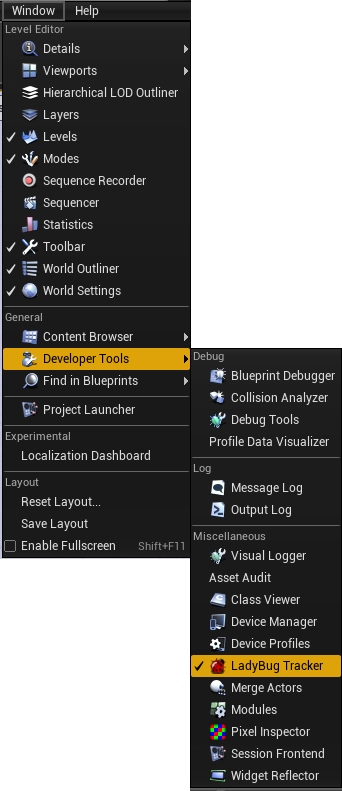
Setup project
Click
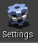
on the LadyBug Tracker toolbar to open plugin settings.
Enter Host (you can use my server to test the plugin http://104.238.158.97/mantisbt) and click “Test” to make sure that address is correct.
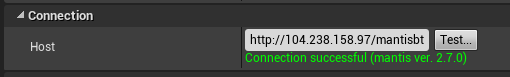
Click “Change login settings” to open the login window.
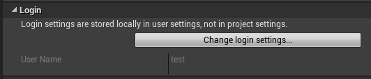
Then enter login and password (“test”/”test” if you use my server), and click “Login” button.
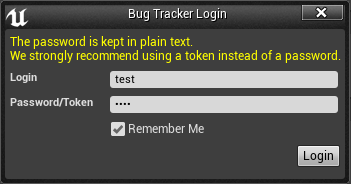
Select an available project from the combo box
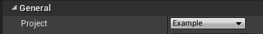
Close settings and get back to the LadyBug Tracker window.
Issue list
In the lssues List tab you should see all issues from the database. If not, click to force download of all issues.
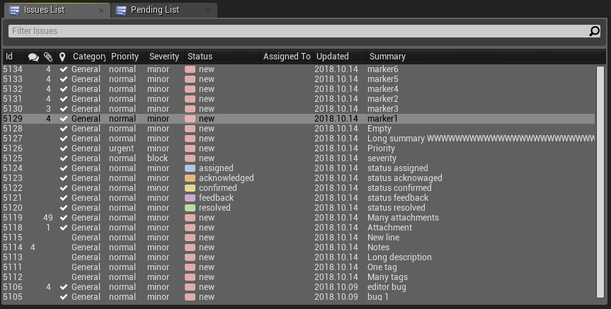
Enter a phrase in “Filter Issues” to find all bugs containing this phrase in Summary Description or Additional Information field. E.g. try “green”.
Now try something more complex like “status = new category = gameplay”.
View Issue Detail
Select an issue on the list. The selected issue details should appear in the Details tab.
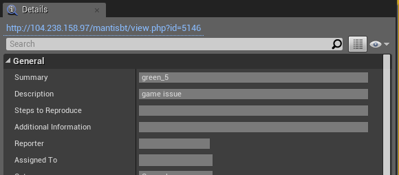
Click the link on the top of this panel to open issue in a web browser.
Scroll down to the Attachment section and click any attachment link to open the it in a web browser.
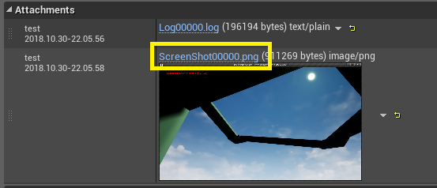
To add a note to the issue in “Notes” section, enter some text and then click Add Note.
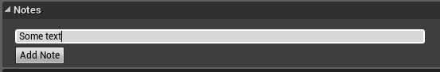
---
Edit Issue
In “Details” tab click to enter the edit mode.
Change some properties, e.g. category.
Click to submit your changes.
Open combo box and select user to quickly assign the issue.
Open combo box and select status to quickly change the issue status.
Markers
The issues with 3D marker information have a tick on the Issues List in a column with symbol. Select one.
Now click to open level at the location specified in the issue.
Check to enable visualization of all bugs on the map.
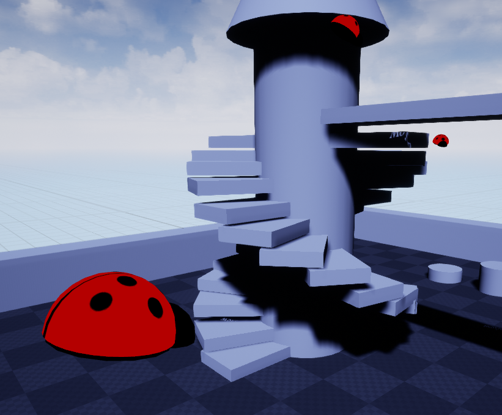
Select a ladybug marker in the level viewport to open the corresponding issue in the Detail tab.
Doubleclick a ladybug marker to jump to the bug location.
Reporting Issue
Click
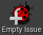
to create an issue.
The newly created issues will appear on the Pending List tab.
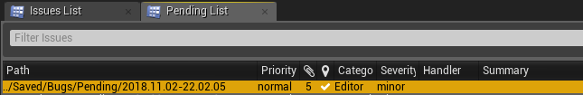
Fill issue details and click to submit the issue.
Now click to create an editor issue entry.
Scroll down to the Attachments section.
Click Edit button next to a screenshot and select your favorite image editor, e.g. paint (c:\windows\system32\mspaint.exe)
Do some art, save your work, and close the tool.
Now click . The issue and all its attachments will be submitted to the server.
To report a bug in the game, launch the game in any mode, open the console and execute “ReportBug some_bug_summary” command.
When your game will crash, the plugin will automatically create an issue on the Pending List with all information dumped by the Unreal Engine.
---
Reporting Automations
Open the LadyBug Tracker settings and set the default values of issue category, priority, severity and reproducibility for each issue type. This settings now should be applied to a new issues. Test it.
You can create complex rules defining how the new issues will be filled out by default. Open MyIssueConstructor (Content/Blueprints/MyIssueConstructor.uasset”) and add nodes for setting a platform.
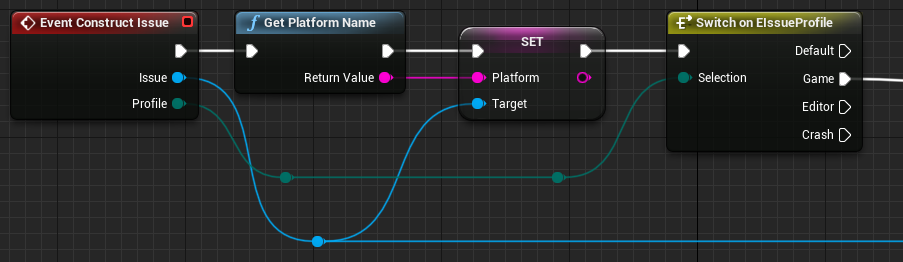
In the settings, set Constructor Class to MyIssueConstructor
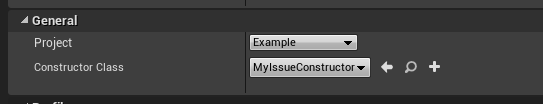
Test it by creating an issue in the game.
You can also configure the plugin to automatically create issues when certain conditions occur in the game. E.g. when a player falls under the terrain. Open ExamplePlayerController and take a look at example implementation. For simplification, this bug will be reported when you press [R] in game. Test it.

 symbol. Select one.
symbol. Select one. to open level at the location specified in the issue.
to open level at the location specified in the issue.